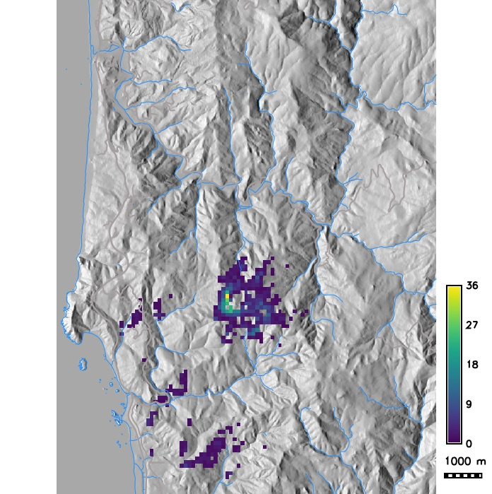
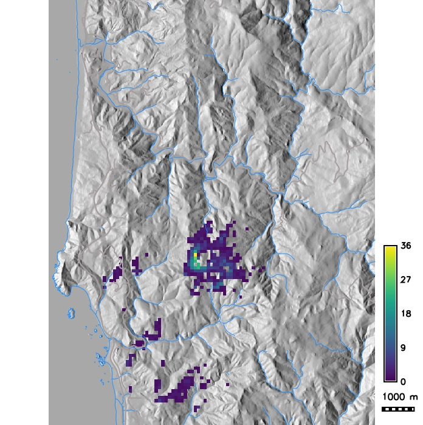

Pest or Pathogen Spread Modeling
Anna Petrasova, Vaclav Petras, Devon Gaydos, Chris Jones,
Helena Mitasova
GIS714 Geosimulations NCSU
Motivation
- Plant diseases and pests threaten production of food and plant-based materials
- NCSU CGA & USDA APHIS (Animal and Plant Health Inspection Service) are developing tools to forecast the spread of pests and pathogens and to design effective control measures

Spotted lantern fly infestation
Modeling components
When performing simulations we need to consider modeling components:
- Modeled quantity [units]: density of infected plants (hosts)
- Spatial and temporal extent and scale: field, regional, global spread
- Configuration space and interactions: pathogen/pest properties, host density, weather, initial infected locations
- Governing equations or rules: rate of reproduction, distance and direction of spread, establishment
Pest or Pathogen Spread Model PoPS
Geospatial simulation of pests or pathogens over a landscape
Main inputs (drivers):
- locations with infected hosts
- host density
- weather conditions
Main outputs:
- Spatial distribution of infected host densities at a given time
- Spatial distribution of infected host probabilities over time
Governing equation
Describes density of infected hosts at time $t$ as a function of pests/pathogens reproduction, dispersal, and establishment$$ \Psi_{ijt} = \beta W_{it} I_{it} * K (d, w) * (W_{jt} S_{jt}) / N_j$$
where

Generating pests/pathogens: reproduction
Number of pests/pathogens each infected host produces $\lambda$:$$\lambda = \beta X_{it} P_{it} T_{it} I_{it}$$
where

Spreading the pests/pathogens: dispersal
The vector of pests/pathogens spread from cell $i$ to cell $j$ is:$$ V_{ij} = K(d_{ij}; \alpha_1, \alpha_2, \gamma, D(\omega, \kappa))$$
where

Establishment of pests/pathogens
The number of infected susceptible hosts in a cell $j$:$$E_j = X_{jt} P_{jt} T_{jt} S_{jt}/N_j $$
where

Spatial outputs of stochastic simulations
- Number of infected hosts (trees, plants) in each cell from individual stochastic runs
- Probability infection map: probability that the hosts will be infected over given period of time
derived from large number of stochastic runs
- Average number of infected hosts in each grid cell from large number of stochastic runs and associated standard deviations map
PoPS application for SOD modeling
Study area and initial locations with hosts infected by a pathogen causing Sudden Oak Death (SOD) disease


PoPS application for SOD modeling
Host density and a weather index map


PoPS application for SOD modeling
Infected hosts in 2019 and 2023 from a single stochastic run


PoPS application for SOD modeling
Probability of grid cell getting infected as a result of many stochastic runs and average number of infected trees per grid cell
 

Scenario modeling
PoPS allows spatial management input at specific times of the simulation and supports simulation steering :- Tonini, F, D. Shoemaker, A. Petrasova, B. Harmon, V. Petras, R. C. Cobb, H. Mitasova, and R. K. Meentemeyer, 2017. Tangible geospatial modeling for collaborative solutions to invasive species management. Environmental Modelling and Software 92: 176-188. DOI: 10.1016/j.envsoft.2017.02.020
- Petrasova, A., Gaydos, D.A., Petras, V., Jones, C.M., Mitasova, H. and Meentemeyer, R.K., 2020. Geospatial simulation steering for adaptive management. Environmental Modelling & Software 133: 104801. DOI: 10.1016/j.envsoft.2020.104801

PoPS application for SOD scenario modeling
Number of infected hosts per cell from single run simulations with different dispersal kernels (exponential with modified distance and wind strength, Cauchy, anisotropic)


PoPS application for SOD scenario modeling
Probability of hosts getting infected in a grid cell for management scenarios: local buffers, massive barrier clear cut


Software
- PoPS (C++ library)
- rpops R package (uses Rcpp for R C++ integration)
- r.pops.spread GRASS GIS Addon in C++
All open source, hosted on GitHub
User Interfaces
- PoPS Web Platform
- Tangible Landscape


PoPS Forecasting and Control System
Interconnected components:
- PoPS model: predicts probability of infection
- Spatial Decision Support System: interactive dashboard for stakeholders
- Iterative sampling and management: validation of forecasts and improving calibration
- Pest/Pathogen parameter library: biological characteristics influencing spread
- Host map library: satellite data + machine learning algorithms
Calibration and validation
- What are the correct parameters for this model?
- Calibration is the estimation and adjustment of model parameters and constraints to improve the agreement between model output and a data set
- How does the model perform compared to the real system?
- Validation is a demonstration that a model possesses a satisfactory range of accuracy consistent with intended application of the model
Calibration methods
- Monte Carlo Markov Chains (MCMC)
- Approximate Bayesian Computation (ABC)
Assumptions:
- Simulation and data are comparable (i.e., the output from the simulation is a quantity recorded in the data) or can be compared from summary statistics.
Calibration using MCMC
- Markov Chains:
- sequences of events that are probabilistically related to each other.
Each event comes from a set of outcomes, and each outcome determines
which outcome occurs next, according to some fixed probability set.
- They are memoryless: everything you need to know for the next state is available in the current state.
- Over the long run, it settles into a pattern.
- Monte Carlo simulations
- repeatedly generating random numbers to estimate some fixed parameter value
Calibration using MCMC
- generate a random parameter set and run the model
- if the new parameter performs better, it is added to the chain of parameter values with a certain probability determined by how much better it is
- repeat this sequence many times to get a distribution of possible parameters
- take the most common parameter from this distribution
Calibration using ABC
- Generations
- number of times to iterate
- Particles
- number of parameter sets to keep in each generation
- Epsilon
- the threshold that determines if a parameter set is kept or rejected
Calibration using ABC
- Choose number of Particles (P)
- Choose epsilon $\epsilon$
- Calculate summary statistics for observed data $S_d$
- Draw parameters from a uniform distribution
- Run model
- Calculate summary statistics for simulated data $S_s$
- $D(S_d, S_s) ≦ \epsilon$
- Keep (increase p by 1)
- Else reject
- Repeat 4 - 7 until p = P
Basic ABC example
$S_d = 7$, $\epsilon=5$, $P=3$| $S_s$ | $D(S_d,S_s)$ | Kept |
|---|---|---|
| 5 | 2 | ✓ |
| 13 | 6 | ✕ |
| 17 | 10 | ✕ |
| 7 | 0 | ✓ |
| 8 | 1 | ✓ |
Simple, but requires lot of user input to test for best $\epsilon$, computationally slow if $\epsilon$ is low.
Calibration using ABC-SMC
ABC with sequential Monte Carlo sampling:- a sequence of distributions is constructed by gradually decreasing $\epsilon$ in each generation ($\epsilon_1, \epsilon_2, \epsilon_3,$... can be pre-selected or derived based on the previous generation)
- each generation is obtained as a weighted sample from the previous distribution that has been perturbed through a kernel
- perturbation kernel can be uniform distribution, multivariate normal distribution
Calibration using ABC-SMC MNN
Adaptive routines to find optimal perturbation kernel:- ABC-SMC MNN uses multivariate normal distribution based on covariance matrix
- covariance matrix calculated using M nearest neighbors (MNN) of a particle
- normalised Euclidean distance can be used when searching for the nearest neighbours
Bayesian Updating
Quickly incorporate new data:
- use previous posterior means and covariance matrix as priors for next time
- use ABC_SMC MNN to calibrate for new year of data
- calculate weights, e.g., based on number of observations
- calculate posteriors from priors, calibrated parameters and weights
Comparison metrics
- Proportion of correct pixels
- Odds ratio
- Kappa
- Quantity disagreement
- Allocation disagreement
- Configuration disagreement
Quantity and Allocation disagreement

Quantity disagreement = $|3 - 4| = 1$
Allocation disagreement = 2 (always even, here 1 pixel swapped)
Confusion matrix

Odds Ratio
$$\mbox{Odds ratio} = \frac{TP * TN}{FP * FN}$$
Issues with Odds Ratio
Over-reliance on negative values and different odds ratios with the same disagreement:
| A | B | |
|---|---|---|
| Quantity disagreement | $|6-5| = 1$ | $|6-7| = 1$ |
| Allocation disagreement | $2$ | $2$ |
| Odds Ratio | $(4 * 2) / (2 * 1) = 4$ | $(5 * 1) / (1 * 2) = 2.5$ |
Kappa
If the rasters are in complete agreement then $\kappa = 1$. If there is no agreement other than what would be expected by chance $\kappa = 0$.
$$\kappa = \frac{P_o - P_e}{1 - P_e}$$
$$P_o = \mbox{observed agreement} = \frac{TP + TN}{\mbox{All}}$$
$$P_e = \mbox{probability of random agreement} = P_{yes} + P_{no}$$
$$P_{yes} = \frac{TP + FN}{\mbox{All}} * \frac{TP + FP}{\mbox{All}}$$
$$P_{no} = \frac{FP + TN}{\mbox{All}} * \frac{FN + TN}{\mbox{All}}$$
Issues with Kappa
- Penalizes a map more strongly for allocation disagreement than quantity disagreement
- It’s a ratio, which can introduce problems in calculation and interpretation (e.g., when denominator or numerator is 0; is a value low because the denominator is high, or because the numerator is low?
- It compares to a random baseline, but this can be irrelevant or misleading. It might be more useful to compare to a naïve classification (like assuming no disease spread)
Landscape pattern

Simulations A and B have the same quantity and allocation disagreements, but A is more reflective of the truth.
Configuration disagreement
Combination of different metrics:
- Edge contrast
- Patch shape complexity
- Aggregation
- Nearest neighbor distance
- Patch dispersion
- Large patch dominance
- Neighborhood similarity